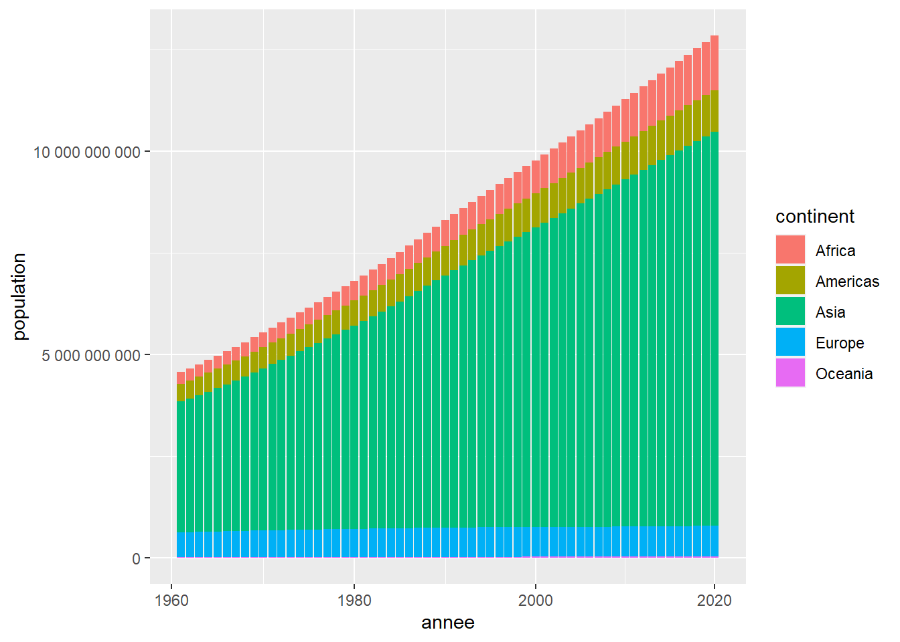
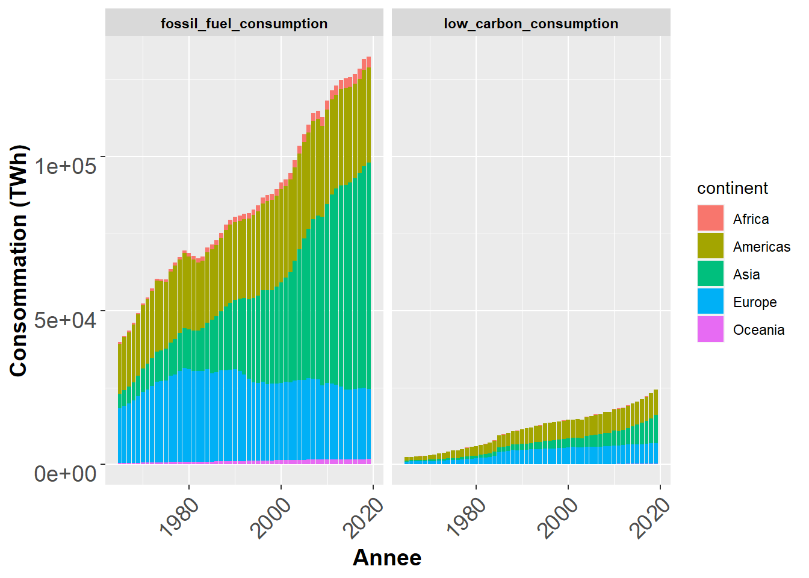
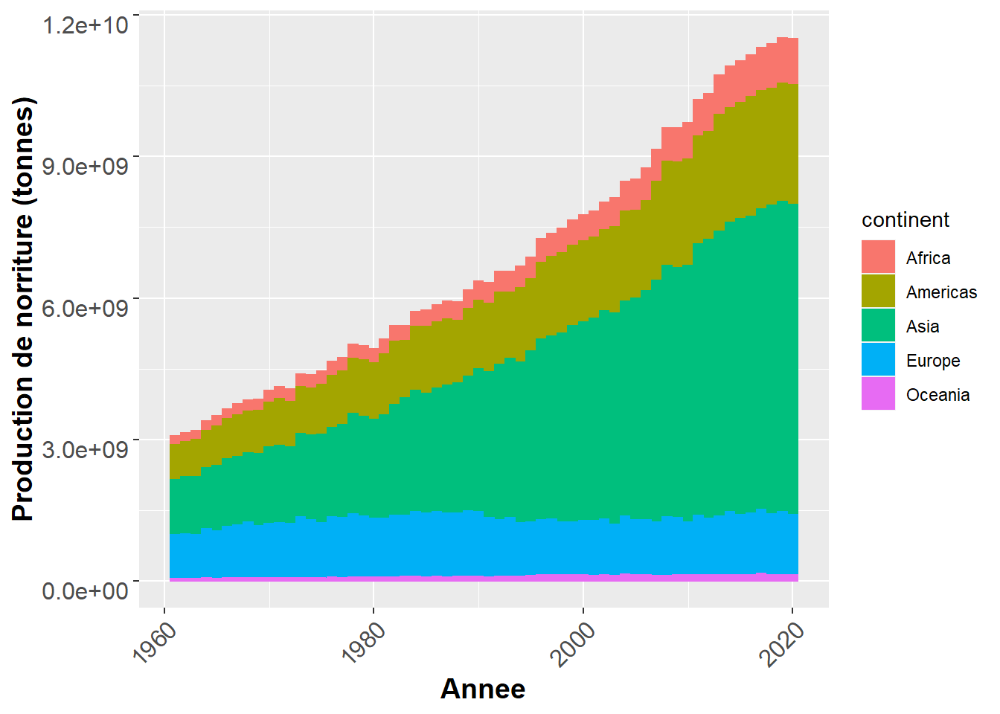
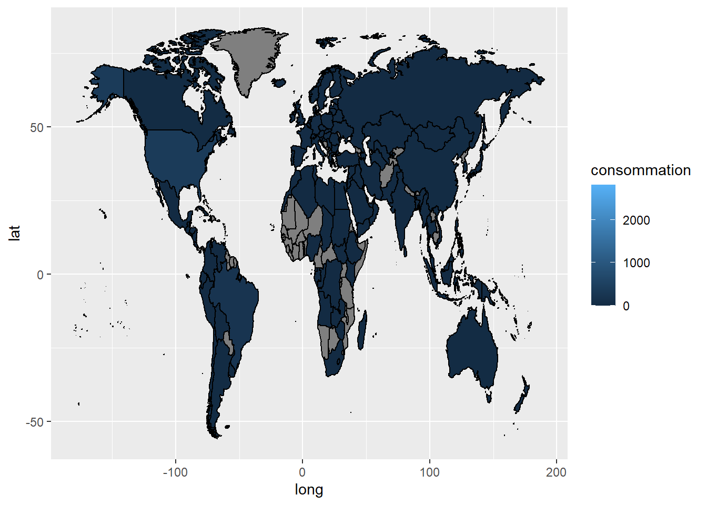

Chapter 2 Analyse de la population, de la production de nourriture et de la consommation d’énergie à l’echelle continentale
2.1 POPULATION
library(flexdashboard)
library(tidyverse)
library(readxl)
library(tidyselect)
library(countrycode)
population<- read_delim("WPP2019_POP_F01_1_TOTAL_POPULATION_BOTH_SEXES_UN.csv", skip=16, na="...")## Rows: 285 Columns: 78
## ── Column specification ────────────────────────────────────────────────────────
## Delimiter: ";"
## chr (75): Estimates, Less developed regions, c, Development Group, 1 721 612...
## dbl (3): 4, 902, 1803
##
## ℹ Use `spec()` to retrieve the full column specification for this data.
## ℹ Specify the column types or set `show_col_types = FALSE` to quiet this message.population<-read_excel("WPP2019_POP_F01_1_TOTAL_POPULATION_BOTH_SEXES_UN.xlsx", skip = 16, na="...") |>
select(1:3, Type,"1950":"2020" ) |>
pivot_longer(cols=5:75,
names_to ="annee",
values_to = "population") |>
mutate(population=population*1000) |>
rename(region=3) |>
filter(annee>=1961)
population_continent<-population |>
select(annee, population, region) |>
mutate(continent=countrycode(region, origin = "country.name", destination = "continent"))## Warning in countrycode_convert(sourcevar = sourcevar, origin = origin, destination = dest, : Some values were not matched unambiguously: Africa, Asia, AUSTRALIA/NEW ZEALAND, Caribbean, Central America, CENTRAL AND SOUTHERN ASIA, Central Asia, Channel Islands, Eastern Africa, EASTERN AND SOUTH-EASTERN ASIA, Eastern Asia, Eastern Europe, Europe, EUROPE, EUROPE AND NORTHERN AMERICA, Geographic regions, High-income countries, Land-locked Developing Countries (LLDC), Latin America and the Caribbean, LATIN AMERICA AND THE CARIBBEAN, Least developed countries, Less developed regions, Less developed regions, excluding least developed countries, Low-income countries, Lower-middle-income countries, Melanesia, Micronesia, Middle-income countries, Middle Africa, More developed regions, No income group available, Northern Africa, NORTHERN AFRICA AND WESTERN ASIA, Northern America, NORTHERN AMERICA, Northern Europe, Oceania, OCEANIA (EXCLUDING AUSTRALIA AND NEW ZEALAND), Polynesia, Small Island Developing States (SIDS), South-Eastern Asia, South America, Southern Africa, Southern Asia, Southern Europe, SUB-SAHARAN AFRICA, Sustainable Development Goal (SDG) regions, UN development groups, Upper-middle-income countries, Western Africa, Western Asia, Western Europe, WORLD, World Bank income groups## Warning in countrycode_convert(sourcevar = sourcevar, origin = origin, destination = dest, : Some strings were matched more than once, and therefore set to <NA> in the result: AUSTRALIA/NEW ZEALAND,Oceania,Oceania; OCEANIA (EXCLUDING AUSTRALIA AND NEW ZEALAND),Oceania,Oceaniaggplot(population_continent |>
mutate(annee=(as.numeric(annee))) |>
drop_na(continent)) +
aes(annee, population,fill=continent) +
geom_col()+
scale_x_continuous( trans='log10') +
scale_y_continuous(labels=function(x) {
format(x,scientific=FALSE,
big.mark=" ")
})
2.2 Energie
2.2.1 Evolution de la production d’energie par continent depuis 1961
energy<-read_delim("owid-energy-data__OWID.csv")## Rows: 17470 Columns: 124
## ── Column specification ────────────────────────────────────────────────────────
## Delimiter: ","
## chr (2): iso_code, country
## dbl (122): year, coal_prod_change_pct, coal_prod_change_twh, gas_prod_change...
##
## ℹ Use `spec()` to retrieve the full column specification for this data.
## ℹ Specify the column types or set `show_col_types = FALSE` to quiet this message.seqTp_energy <- energy |>
select(1:3,contains("consumption")) |>
filter(year >= 1961 & year <= 2020) |>
pivot_longer(cols=4:16,
names_to="type_energie",
values_to="consommation") |>
mutate(types = case_when(str_detect(type_energie,"coal|gas|oil")~"fossil_fuel_consumption",
str_detect(type_energie,"nuclear|biofuel|hydro|other_renewable|solar|wind")~"low_carbon_consumption",
TRUE~NA_character_)) |>
mutate(sources_energy = case_when(str_detect(type_energie,"biofuel")~"biofuel",
str_detect(type_energie,"coal")~"coal",
str_detect(type_energie,"wind")~"wind",
str_detect(type_energie,"gas")~"gas",
str_detect(type_energie,"hydro")~"hydro",
str_detect(type_energie,"solar")~"solar",
str_detect(type_energie,"nuclear")~"nuclear",
str_detect(type_energie,"oil")~"oil",
str_detect(type_energie,"other_renewable")~"other_renewable_consumption"
))
energy_continent<- seqTp_energy |>
mutate(continent=countrycode(country, origin = "country.name", destination = "continent"))|>
rename(annee="year") |>
mutate(annee=(as.numeric(annee))) |>
drop_na(continent) |>
drop_na(types)## Warning in countrycode_convert(sourcevar = sourcevar, origin = origin, destination = dest, : Some values were not matched unambiguously: Africa, Asia Pacific, Central America, CIS, Czechoslovakia, Eastern Africa, Europe, Europe (other), Kosovo, Middle Africa, Middle East, North America, OPEC, Other Asia & Pacific, Other Caribbean, Other CIS, Other Middle East, Other Northern Africa, Other South America, Other Southern Africa, South & Central America, Timor, United States Pacific Islands, Western Africa, World, Yugoslaviaggplot(energy_continent )+
aes(annee,consommation,fill=continent)+
geom_col()+
facet_grid(~types)+
labs(x="Annee", y="Consommation (TWh)")+
theme(axis.text.x=element_text(size=14,
angle=45,
hjust=1,
vjust=1),
axis.text.y=element_text(size=14,
hjust=1,
vjust=1),
strip.text.x=element_text(colour="black",
face="bold"),
axis.text=element_text(size=12),
axis.title=element_text(size=14,face="bold"))## Warning: Removed 55123 rows containing missing values (position_stack).
2.2.2 Evolution de la production d’energie par continent et par sources d’energies depuis 1961
ggplot(energy_continent )+
aes(annee,consommation,fill=sources_energy)+
geom_col()+
facet_grid(~continent)+
labs(x="Annee", y="Consommation (TWh)")+
theme(axis.text.x=element_text(size=14,
angle=45,
hjust=1,
vjust=1),
axis.text.y=element_text(size=14,
hjust=1,
vjust=1),
strip.text.x=element_text(colour="black",
face="bold"),
axis.text=element_text(size=12),
axis.title=element_text(size=14,face="bold"))## Warning: Removed 55123 rows containing missing values (position_stack).
2.3 Nourriture
2.3.1 Evolution de la production de nourriture par continent depuis 1961
food<-read_delim("Production_Crops_Livestock_E_All_Data.csv",
locale=locale(encoding="ISO-8859-1")) |>
select(-ends_with("F")) |>
pivot_longer(cols=Y1961:Y2020,
names_to="annee",
values_to="Production_norriture") |>
mutate(annee=parse_number(annee)) |>
mutate(continent=countrycode(Area, origin = "country.name", destination = "continent")) |>
drop_na(continent)## Rows: 77523 Columns: 127
## ── Column specification ────────────────────────────────────────────────────────
## Delimiter: ","
## chr (64): Area, Item, Element, Unit, Y1961F, Y1962F, Y1963F, Y1964F, Y1965F,...
## dbl (63): Area Code, Item Code, Element Code, Y1961, Y1962, Y1963, Y1964, Y1...
##
## ℹ Use `spec()` to retrieve the full column specification for this data.
## ℹ Specify the column types or set `show_col_types = FALSE` to quiet this message.## Warning in countrycode_convert(sourcevar = sourcevar, origin = origin, destination = dest, : Some values were not matched unambiguously: Africa, Americas, Asia, Australia and New Zealand, Belgium-Luxembourg, Caribbean, Central America, Central Asia, Czechoslovakia, Eastern Africa, Eastern Asia, Eastern Europe, Europe, European Union (27), Land Locked Developing Countries, Least Developed Countries, Low Income Food Deficit Countries, Melanesia, Micronesia, Middle Africa, Net Food Importing Developing Countries, Northern Africa, Northern America, Northern Europe, Oceania, Polynesia, Serbia and Montenegro, Small Island Developing States, South-eastern Asia, South America, Southern Africa, Southern Asia, Southern Europe, Western Africa, Western Asia, Western Europe, World, Yugoslav SFR## Warning in countrycode_convert(sourcevar = sourcevar, origin = origin, destination = dest, : Some strings were matched more than once, and therefore set to <NA> in the result: Australia and New Zealand,Oceania,Oceaniafood_continent <-food |>
filter(Element=="Production") |>
filter(str_detect(Item,"Total")|str_detect(Item,"Primary"))
ggplot(food_continent)+
aes(annee,Production_norriture,colour=continent, fill=continent)+
geom_col()+
labs(x="Annee", y="Production de norriture (tonnes)")+
theme(axis.text.x=element_text(size=12,
angle=45,
hjust=1,
vjust=1),
axis.text.y=element_text(size=12,
hjust=1,
vjust=1),
strip.text.x=element_text(colour="black",
face="bold"),
axis.text=element_text(size=12),
axis.title=element_text(size=14,face="bold"))## Warning: Removed 16240 rows containing missing values (position_stack).
2.3.2 Evolution de la production de nourriture par continent et par item de nourriture depuis 1961
ggplot(food_continent )+
aes(annee,Production_norriture,fill=Item)+
geom_col()+
facet_grid(~continent)+
labs(x="Annee", y="Production de norriture (tonnes)")+
theme(axis.text.x=element_text(size=14,
angle=45,
hjust=1,
vjust=1),
axis.text.y=element_text(size=14,
hjust=1,
vjust=1),
strip.text.x=element_text(colour="black",
face="bold"),
axis.text=element_text(size=12),
axis.title=element_text(size=14,face="bold"))## Warning: Removed 16240 rows containing missing values (position_stack).